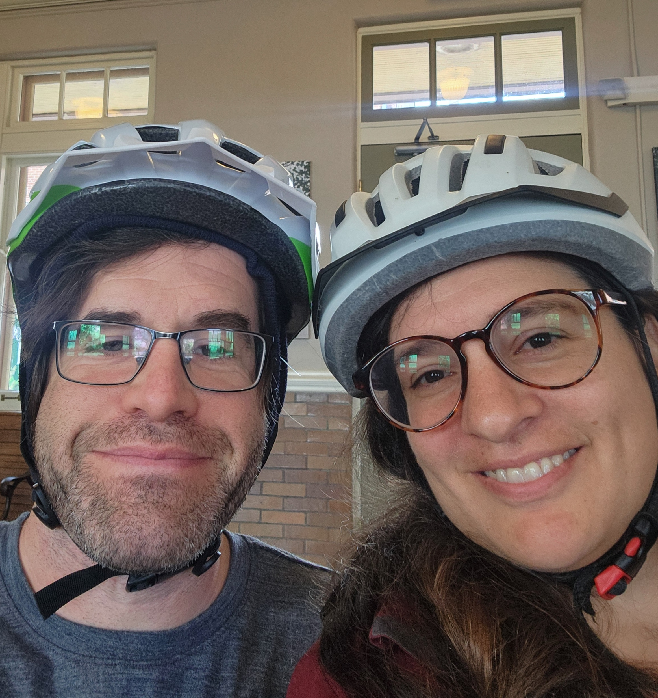

Founders
Lily Melton
Lily Melton, a Washington, Missouri native, has traveled the world teaching and learning across many sectors and societal divisions. She lived in Beijing, China for 10 years teaching in international schools and volunteering in rural orphanages while immersing herself in the language and learning from her Chinese neighbors, friends, and co-workers. She lifeguarded and taught swimming lessons at the YMCA, and coached the Washington Swim Team in the 00’s. In China, she had the opportunity to participate in international swimming competitions across the headwaters of Yellow River that brought her in contact and into the homes of local minority groups near Tibet. She also spent time teaching people with visual impairment to swim and advocating for their rights in Beijing. Lily nannied in Okinawa, Japan and on a sailboat in the Mediterranean. She volunteered at an organic farm in Turkey, and milked cows for a summer in Alaska. Lily loves cycling and public transit. Lily’s formal education was in Classics and Liberal Arts. She developed an appreciation for Ancient Languages including Latin and Ancient Greek in high school and college. It was from her classical foundation studying linguistics and culture, that she branched out into learning modern languages and traveling and living independently around the world.
Lily is classically educated holding a Bachelor of Arts in Liberal Arts and Culture from New Saint Andrews College.
Jeffrey Melton
Brings a knack for technology, building websites, dabbling in audio, experience running a radio station, home remodeling, and car maintenance. He has a passion for personal finance and budgets. He loves to share and teach compounding interest! Jeff has a love for animals and has experience working in an animal shelter. He has a special affinity for dogs and loves to dogsit. He works with his hands whether whipping up his homemade red beans and rice or using his drill for construction. He works with his mind, teaching from pre-algebra through Calculus, and sharing his enthusiasm for literature by reading and reflecting with his friends and with his students. Jeff teaches Lily how to start their garden from seeds and keep way too many house plants alive.
Jeffrey holds a Bachelor of Arts in Literature from the University of Missouri-Rolla. He completed the Calculus cycle, Differential Equations, Linear Algebra, specialized course work in Civil Engineering and Computer Science. He will recieve adolescent accreditation by Association Montessori International in the summer of 2026.
Lily and Jeff both enjoy cooking, cycling, and contradancing.
